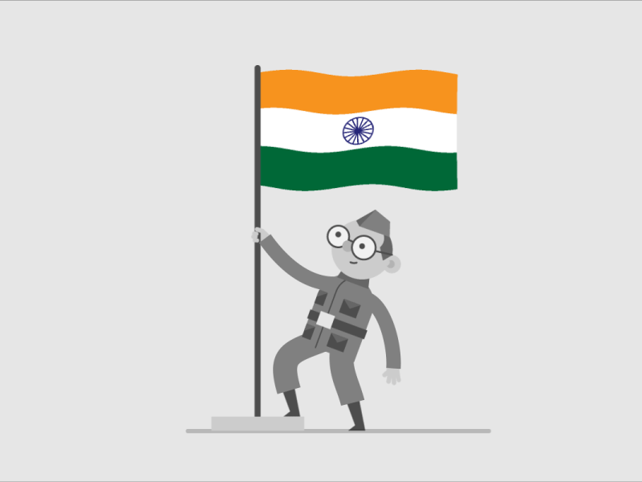

Hi Friends , we - the Indians had got freedom in 1947 .
If anyone asks to name some freedom fighters , we will name some fighters like
Mahatma Gandhi , Nehru , Subash Chandra Bose , Bhagat Singh , etc.
But there are so many freedom fighters who are unrecognised by so many people.
So , friends now we will present 5 Unknown Freedom Fighters to recognise and pray them in the future.


Peer Ali Khan was born on year 1812 . He was a very great Patriot .
He participated in the "Indian Independence Movement" which was started in 1857 .
He was given capital punishment for participating in the freedom struggle of 1857.
For participating in the freedom struggle , he was arrested on July 4th , 1857.
Not only he , on that day 33 of his followers had been arrested along with him.
And within 2 days i.e.,on 7th July , 1857 , he was hanged in the public by the British Commisioner William Tyler.
Lakshmi Sahgal was born on 24th October , 1914 . She was a revolutionary lady freedom fighter .
Lakshmi Sahgal was born to S. Swaminathan, a lawyer who practised criminal law at Madras High Court,
and A.V. Ammukutty, better known as Ammu Swaminathan, a social worker and independence activist.
At that time when Subash Chandra Bose is forming INA (Indian National Army) , she was intrested in that and joined in INA.
With the help of Subash Chandra Bose , she formed a women's regiment (or) a unit of army named as "Rani of Jhansi regiment".
On 19 July 2012, Sahgal suffered a cardiac arrest and died on 23 July 2012.
Her body was donated to Ganesh Shankar Vidyarthi Memorial Medical College for medical research.
TRIO OF BENOY,BADAL AND DINESH
Benoy was born on 11th September , 1908 .
His father's name is RebatiMohan Basu , who was an Engineer .
Benoy was born in Bangladesh , Rohitbhog in the Munshiganj district .
After completing Matriculation in Dhaka , he joined in Mitford Medical School .
Basu and his peer revolutionaries joined Bengal Volunteers - a group organised by Subhas Chandra Bose in 1928,
at the occasion of Calcutta session of the Indian National Congress.
Badal Gupta born on 1912 who was an Indian revolutionary against British rule in India.
He was born in the village Purba Shimulia (East Shimulia) in the Bikrampur region of Dhaka, now in Munshiganj District, Bangladesh.
Badal Gupta was influenced by the revolutionary activities of his two paternal uncles
Dharaninath Gupta and Nagendranath Gupta.
Badal was inspired by Nikunja Sen, a teacher of the Banaripara School of Bikrampur.
Dinesh Gupta was born on 6th December , 1911 .
He was born in Josholong in Munshiganj District, now in Bangladesh.
While he was studying he too joined in the Bengal Volunteers which was earlierly discussed in the topic of
Benoy Krishna Basu .
While in Alipore Jail, he wrote letters to his sister which were later compiled into the book 'Ami Shubhash Bolchhi'.
He was hanged on 7 July 1931 at Alipore Jail.
THE TRIO INCIDENT
On 8 December 1930, Dinesh, along with Benoy Basu and Badal Gupta, dressed in European costume, entered the Writers' Building and shot dead Simpson.
Nearby police started firing at them in response. What ensued was a brief gunfight between the three young revolutionaries and the police.
Some other officers like Twynam, Prentice, and Nelson suffered injuries during the shooting.
Soon police overpowered them. However, the three did not wish to be arrested. Badal Gupta took Potassium cyanide, while Benoy and Dinesh shot themselves with their own revolvers.
Benoy was taken to the hospital where he died on 13 December 1930.
THANK YOU FOR VISITING ! HAVE A GREAT DAY :)